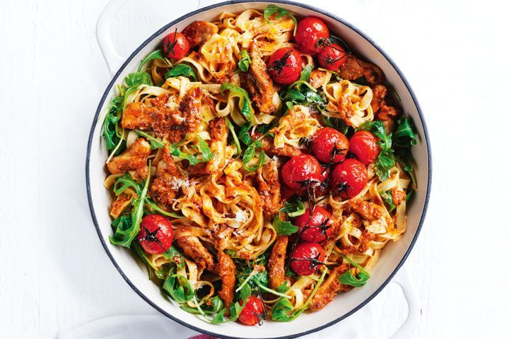

Tomato pesto chicken pasta Recipe

Description
A light and bright pasta bowl with pesto chicken, this Italian-inspired recipe makes a great weeknight meal.
Ingredients
- 375g pkt fresh fettuccine
- 1 tbsp olive oil
- Chicken Thigh Fillets, sliced
- 250g vine-ripened cherry tomatoes
- Chilli Pesto or Coles Tomato Pesto
- Australian Baby Rocket
- Cook the pasta in a large saucepan of boiling water following packet directions or until al dente. Drain, reserving ½ cup (125ml) of cooking liquid.
- Meanwhile, heat oil in a large, deep non-stick frying pan over medium-high heat. Cook half the chicken, stirring, for 3 mins or until golden brown and cooked through. Transfer to a plate. Cover with foil to keep warm. Repeat with the remaining chicken.
- Add the tomatoes to the pan and cook for 3 mins or until the tomatoes begin to collapse. Remove from heat. Transfer tomatoes to a separate plate.
- Return chicken to pan with the pasta, pesto and reserved cooking liquid. Season. Toss to combine. Stir in the rocket. Top with the tomatoes.